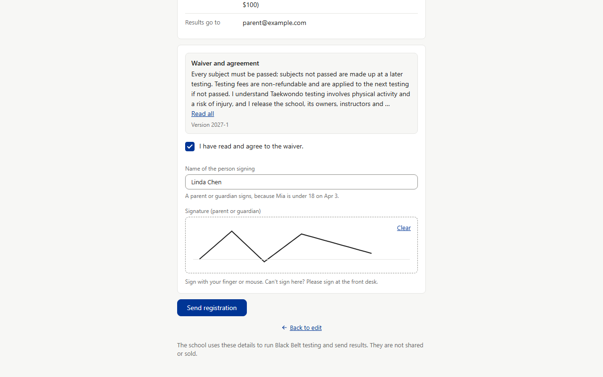
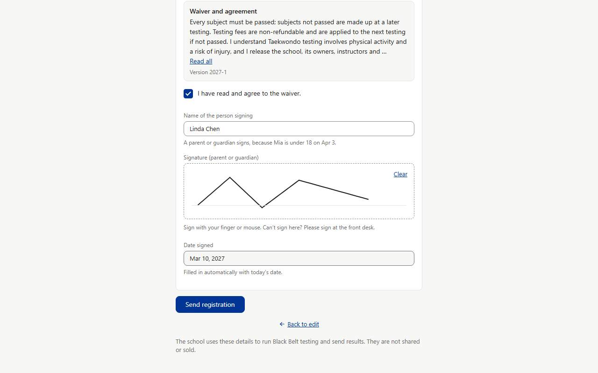
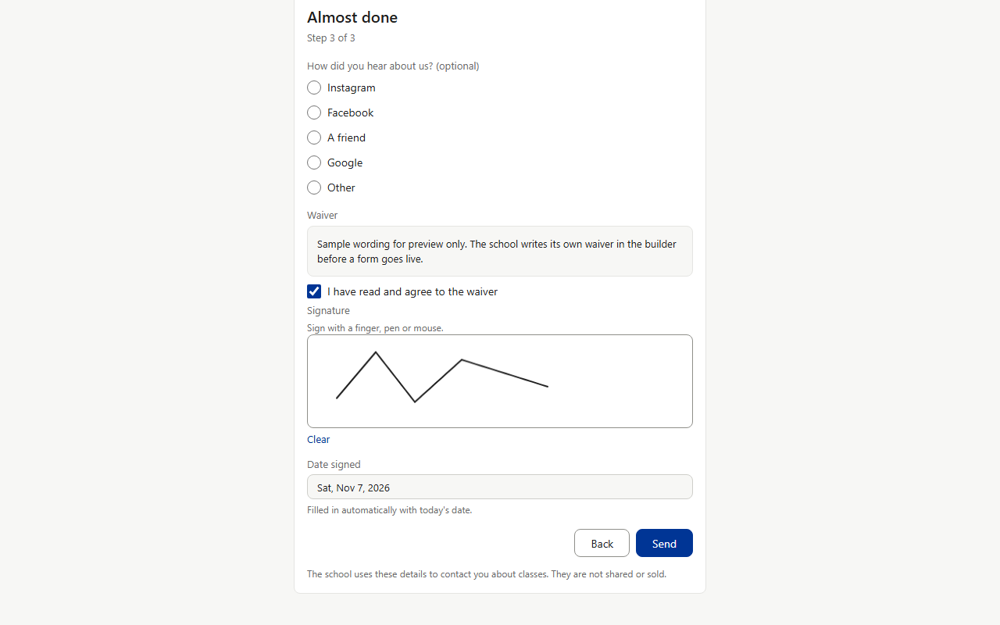
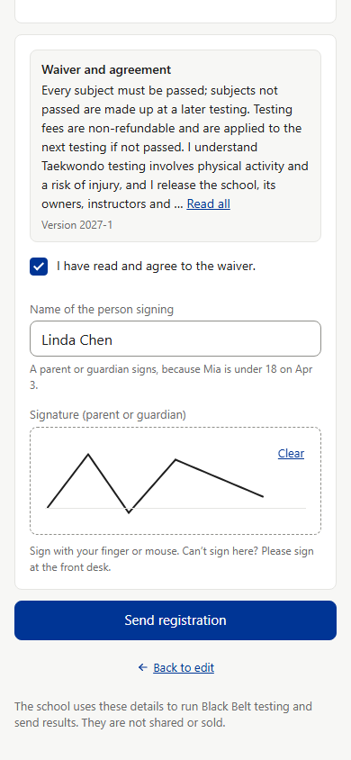
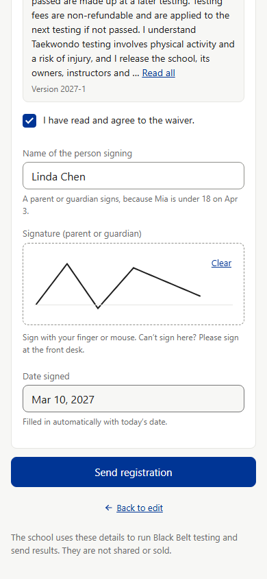
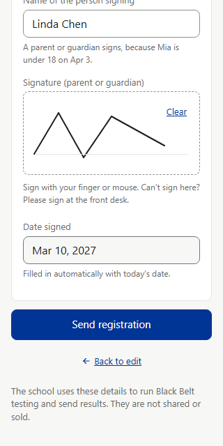
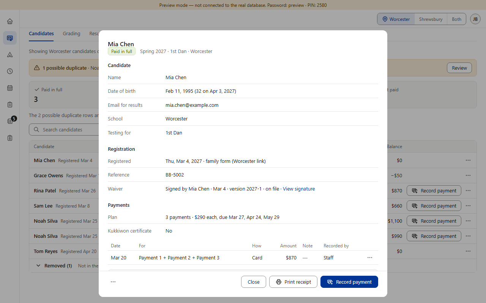
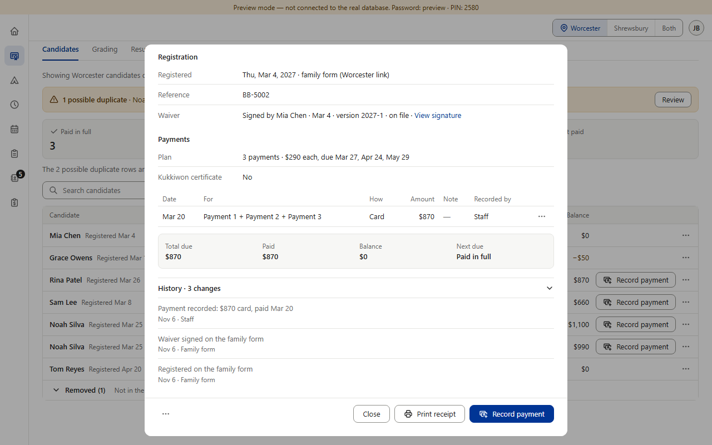
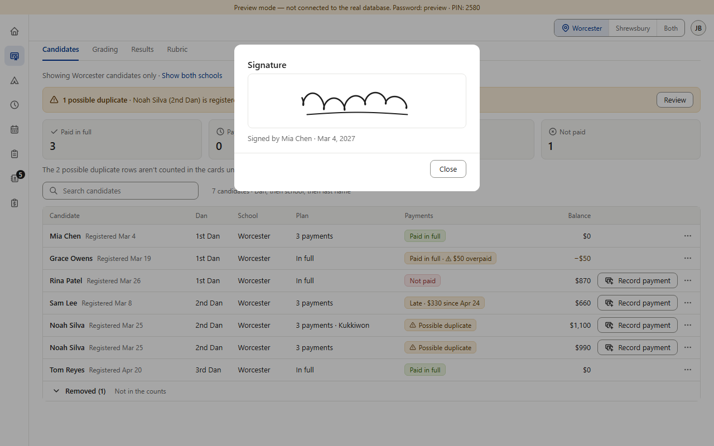

Rulebook v0.638 (Jeffrey, 2026-11-04): every signature has its date signed. Real screenshots of the preview app (fake data).



Words, copied exactly (src/screens/forms/text.js):
Label: Date signed
Hint: Filled in automatically with today's date.
Look (the .fsigned box): a normal text box, read-only, with the page's light-gray fill and a darker gray border, default cursor, 12 px above it. The Black Belt page has its own box styles, so the picture draws the same look with Black Belt's own box and spacing.
One difference to decide: New students prints the day with the weekday ("Sat, Nov 7, 2026"). Every other Black Belt date on this page is written without it, so the Black Belt picture says "Mar 10, 2027". Say if you want the weekday too.
The day is the school's day (Massachusetts time), not the phone's clock.






Staff already see the date signed everywhere they see the signature: the Waiver row, the View signature box and the History line. Nothing is missing, so no "after" is drawn for staff. Other screens don't show a signature at all: the printed receipt is payments only, the duplicate-compare box has no waiver, and on a mat-side tablet (Hide payments) the signature stays at the desk.
Only wording differs: staff see the date without the label "Date signed", and the Waiver row leaves out the year ("Mar 4"). Not changed in this picture.